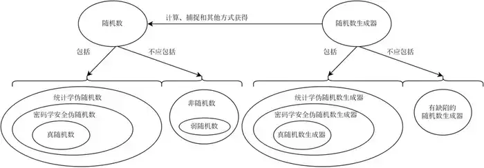
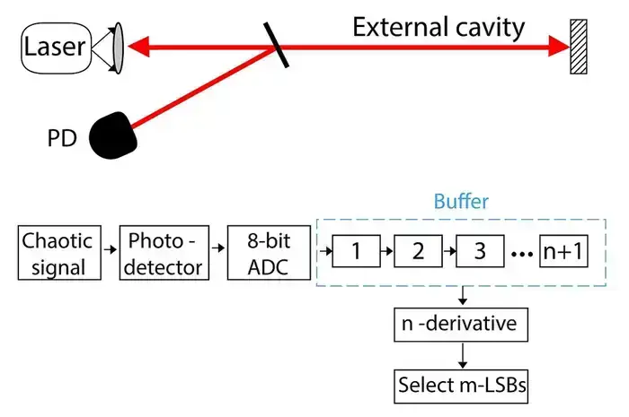
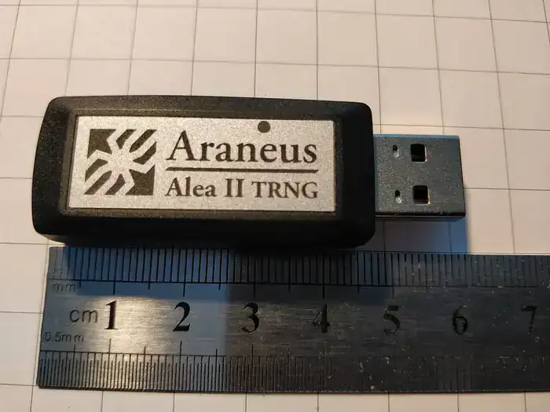

The claim
From 1998 the Global Consciousness Project, founded by Roger Nelson at Princeton, ran a network of hardware random number generators around the world, recording their output continuously. The claim is that during events that focus mass attention — the 9/11 attacks, New Year, major disasters — the network's output deviates from randomness in a way consistent with a global effect of consciousness.
Maps, diagrams and images






The reported effect is small, and the project has published it as significant over the full dataset.
The problems
The first is event selection: the events were chosen by the researchers, largely after the fact or with knowledge of what would be emotionally significant, and the number of candidate events is unbounded. Choosing which days count is choosing the result.
The second is multiple comparisons: the analysis looks at many time windows, many event definitions and many statistical measures, and reports the ones that come out significant. A 2010 re-analysis by Peter Bancel and others found that the effect disappears under pre-registered event definitions. Independent replication with a fixed protocol has not produced the result.
Documented: the network ran, and the data exist.
Documented: the reported effect depends on post-hoc event selection.
Not replicated: with pre-registered events and a fixed analysis.
Not established: any link between consciousness and random number generators.
The lesson: this is the archive's cleanest case of a statistical artefact that looks like a discovery — and the reason pre-registration exists.
Why it is in the archive
Because it is the best-documented attempt to measure a global effect of mind, it ran for twenty years with real equipment, and it failed in the specific way that statistics fails when the analyst is also the chooser.
Open resources on this topic
- PapersOpen-access articles: DOAJ · PubMed Central · Internet Archive Scholar
- BooksPublic-domain and borrowable copies: Open Library · Project Gutenberg · Google Books · Internet Archive
Cite this page
Momin, S. (2026). The Global Consciousness Project. The Larger World Archive. https://drsamonline.github.io/LARGE_GLOBE/global-consciousness-project.htmlMomin, Sohil. “The Global Consciousness Project.” The Larger World Archive, 2026, https://drsamonline.github.io/LARGE_GLOBE/global-consciousness-project.html.Momin, Sohil. “The Global Consciousness Project.” The Larger World Archive, 2026. https://drsamonline.github.io/LARGE_GLOBE/global-consciousness-project.html.@misc{the2026global,
author = {Momin, Sohil},
title = {The Global Consciousness Project},
year = {2026},
howpublished = {The Larger World Archive},
url = {https://drsamonline.github.io/LARGE_GLOBE/global-consciousness-project.html},
note = {Last reviewed 20 November 2026}
}Last reviewed 20 November 2026 · Corrections policy · this page is not peer reviewed
Sources for this page
- Wikipedia, “Global Consciousness Project” — the claim and its criticismen.wikipedia.org
- Wikipedia, “Hardware random number generator” — the apparatusen.wikipedia.org
- Wikipedia, “Data dredging” — the statistical error at the centreen.wikipedia.org
- Wikipedia, “Preregistration (science)” — the fix that was not applieden.wikipedia.org